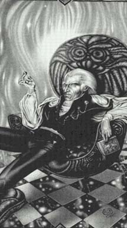

МондорЧеловек значительных талантов и знаний, Мондор словно перенесен из Итальянского Ренессанса Отражения Земля. Способный в выстраивании планов и в плетении интриг сравнять с лучшими политиками той эпох, вдохновленными Макиавелли, он не менее способен к искреннему уважению. Сейчас - это восхищение Мерлином. Роль Мондора в текущей борьбе едва просматривается. Но благодаря своим талантам он, вероятно, сделает сильный ход. |
 |